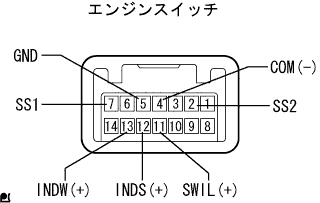

Engine Switch Inspection |
| 1. Engine Switch Inspection |
Resistance Inspection
 |
Using SST (Toyota electrical tester), inspect the resistance between each pair of connector terminals.
| Tester Connection | Condition | Standard |
|---|---|---|
| 7(SS1) - 5(GND) | Switch not pushed | 10k Ω or higher |
| 2(SS2) - 5(GND) | Switch not pushed | 10k Ω or higher |
| 7(SS1) - 5(GND) | Switch pushed | Below 1 Ω |
| 2(SS2) - 5(GND) | Switch pushed | Below 1 Ω |
LED Illumination Inspection
Connect the battery positive and negative to each terminal of the connector, and inspect the illumination condition of the LED.
| Terminal No. (Battery positive - Battery negative) | Specified Condition |
|---|---|
| 11(SWIL) - 4(COM) | Character illumination comes on |
| 12(INDS) - 4(COM) | Indicator (green) comes on |
| 13(INDW) - 4(COM) | Indicator (amber) comes on |